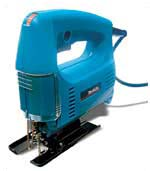
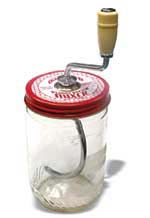
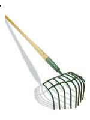
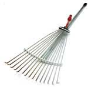
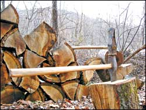
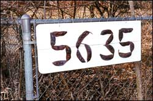
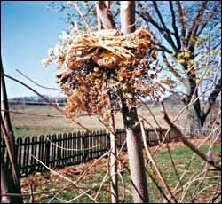
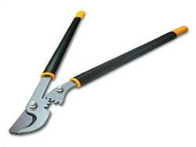

Readers’ Favorite Tools
I just had to write and tell you about a really great tool - especially for women. About a year ago, I came across a Makita jig saw, Model No. 4323K ($69). As a passionate do-it-yourselfer, I needed a small saw that could easily cut wood for my home projects. It only weighs a few pounds and is small enough for a woman’s hand, easy to control and well balanced.
Bobbe O’Brien
Northampton, Massachusetts
I enjoy natural peanut butter that has no unhealthful hydrogenated oils (trans fats). But it can be a messy job to stir the oil back into the peanut butter. My wife saw an ad and ordered a “peanut butter mixer.” When I looked at the device, a cap with a hole in it and a curved hook, I was not really impressed. But after the first use, I was amazed. The hook did the job after a few easy turns. The simple device is called Grandpa Witmer’s Old Fashioned Peanut Butter Mixer, and it costs $10. The address is: P-Butter Mixer, P.O. Box 444, Orrville, OH 44667 (www.witmerproducts.com).
Robert Hartfield
Lansdale, Pennsylvania
We have renamed our “rock rake,” purchased from Lee Valley Tools, the “Sequim Potato Shovel” and consider it an excellent multi-purpose tool. In our area of Sequim, Wash., on the Olympic Peninsula, there are many small rocks shaped like potatoes and known locally as Sequim potatoes. We purchased the rake ($40) to remove these rocks from our new 6,000-square-foot garden, but we have found it is also an excellent weeding tool, getting into tight areas around plants or shrubs, loosening the soil, and dislodging weeds - roots and all.
Greg and
Helen Starr
Carlsborg, Washington
In the best tools category, I would like to nominate the steel, adjustable rake. The rake’s width can be quickly adjusted to anywhere between 7 and 25 inches. This is the handiest rake for working around shrubs I’ve ever had, and it does fine on lawns, too. They are a great deal at $7 at Ace Hardware stores.
M.M. Fisher
Salt Lake City, Utah
Urban Tree Recycler
I am a small-scale sawyer who recycles urban forest trees that normally would end up as mulch or in landfills. More than 3 billion board feet of usable lumber from urban old-growth trees is wasted every year by municipalities. My goal is to keep as much as possible from filling up our landfill, and this year, I hope to process 14,000 board feet of this “throw away” wood. It’s beautiful; I make lumber, flooring and log furniture from the best of it, and the rest is made into firewood.
We are starting a “Tree-cycling” organization to reduce the stress on our nation’s forests while pointing out the value of our urban forests. For more information, go to www.sawmillnc.com.
Kyle Edwards
Iron Station, North Carolina
Handmade Handles
Store-bought sledge handles often break after a season or two, so I make my own tougher, rot-resistant handles from a locust stave. In the wintertime, I split a 3-foot, straight-grained section and leave it to dry by the woodstove. (Sledge hafting has to be winter work, of course. If you fit the handle in the summer, it will shrink and loosen from the heat in the dry winter air, and your creation becomes dangerous.) I use a draw knife to round the handle into an oval shape with dimensions of about 1 1/2 inch by 1 inch at the grip end, tapering to a slender seven-eighths-inch neck, round in cross section and located about a foot from the hammer end. I then increase the handle’s diameter to a bit larger than the hole in the head, scrape the haft end of the handle down to exact size and secure the head with a locust wedge. The taper in the handle allows flex on impact, which keeps the handle from splitting.
Walter Mehring
Covesville, Virginia
Bet You Can’t Eat Just One
I made this house number sign by arranging pods from a Kentucky coffee tree and nailing them onto a painted board. You can also use branches or other natural materials to make rustic signs.
Cheryl Long
Topeka, Kansas
Each fall, we make good use of our food dehydrator to preserve part of the harvest from our homestead orchard. We turn baskets of Italian plums into tasty pitted prunes and bushels of Asian pears and apples into leathery slices, perfect for snacking or baking pies. Our dried bounty lasts all through the cold winter months.
Normally, once they reach the leather stage, we call them good. But this past fall, one batch got away from us. Instead of our normal drying time of eight hours or so, this one was forgotten and ran all night. When we discovered it the next morning, our load of thin-sliced apples had been dried to the point of brittleness. My first reaction was horror!
A whole batch ruined (almost 15 pounds of apples, fresh weight). Not one to throw away anything that might still be useful, I popped a slice into my mouth and bit down. Crunch! “Wow! That’s not bad,” I thought. The brittle slice had the sweet-tart apple taste and the satisfying crunch of those snack chips I love so much. Next, I tested them out on the grandkids, who also thought they were great. Two thumbs up! We’re already planning to make more crunchy apple chips next fall - on purpose this time!
John R. Cumbow
Stanwood, Washington
Seedy CD Bird Treats
If you enjoy giving our feathered friends special treats, here’s a seedy bouquet you can make with minimal cost using little more than garden discards, which I collect and save all summer, and those free promotional CDs that come in the mail.
Supplies needed are: some of the free CDs, dried flower seed heads, crafting wire, berries, raffia, optional homemade birdseed cakes (see recipe at right), and dried apple or orange slices.
Birds love dried coneflower heads, black-eyed Susan seeds, sunflower seed heads, holly berries, barberry berries, bittersweet berries, plume grass, wild millet and seed pods from vining plants. I also use dried sweet Annie, artemesia and dried oregano seed stems as a base. This year we planted two kinds of millet to be sure we had plenty of that material on hand, too.
To make a wreath, first thread a piece of raffia through the center hole in the CD and tie it in a knotted loop; this is for hanging your finished wreath from a tree limb. Wire long-stemmed dried berries or seed heads in a circular fashion around the disc (be sure to clip and tuck-in sharp wire tips). And if you plan to make a solid birdseed cake, leave enough room over the center hole so that the cake will fit into it after you have finished placing the plant and seed materials on the disc.
After wiring the seed stems in place, you can decorate this base with additional dried seed heads, pods, oranges and apples. Some items should be secured with wire, others can be tucked into the base. If you make a cake, secure it with nontoxic glue.
After you have created your treat, hang it on a small tree limb in a favorite viewing location so you can enjoy watching the birds discover and enjoy it. They may even use the raffia for nesting material. After the birds have finished their treat, recycle the disc.
Birdseed Cake
1 package unflavored gelatin
8 tablespoons water
2 cups birdseed
Mix the gelatin with 2 tablespoons of cold water. Let the mixture sit 1 minute. Bring the rest of the water to a boil, add it to the gelatin mixture and stir until dissolved. Mix in the birdseed and let the mixture sit for 10 minutes. Stir again, repeatedly, until all the liquid is absorbed. Spoon the mixture into a mold sized to fit the center of the CD. Cool at least 3 hours. Invert the mold and tap the bottom to release the cake. Let the cake dry overnight and then glue it to the CD wreath.
Maryann Bochek
Gettysburg, Pennsylvania
Fiskars Fans
I started using Fiskars brand scissors several years ago when I had carpel tunnel syndrome. As an avid gardener, my hands would ache from time to time after a lot of digging, pruning, etc., so I began purchasing Fiskars gardening tools to relieve the pain. One of my favorite Fiskars tools is the power-gear bypass lopper; it works like a charm. I simply love Fiskars’ ergonomic designs.
Anita Baxley
Tulsa, Oklahoma
I love to use a Fiskars hand pruner. The cut is easy and clean. The best garden-type tools are made by Fiskars, period. They may cost a bit more than some others but are more than worth every cent. I wish Fiskars made cars!
Elizabeth Cole
Georgetown, Illinois
I can’t rave enough about Fiskars products. I own every size scissors they make. Since I was a little girl, I’ve been using them for my knitting, crocheting and sewing projects.
Cynthia Sullivan
Lakeside, California
The new power-gear lopper (shown below) from Fiskars ($60) is absolutely fabulous. For those people that find themselves with decreasing strength with age or who would just like an easy time of cutting hard-to-reach branches, this is the product to get. It’s lightweight and the “power gear” will give you extra cutting ease that traditional heavy loppers don’t offer.
Leslie Miller
Wartrace, Tennessee
Home Schooling
If you have experience home schooling your children, please send us a summary, 500 words or less, of the pros and cons of this schooling choice, your favorite curricula and any advice you would like to offer other readers. We’ll use your reports in a story planned for next year. Send your reports to: letters@MotherEarthNews.com.
We’re sending Fiskars shovels to the folks who sent in these tool reports, and we’ll have more Reader’s Favorite Tools in future issues. You, too, can win a Fiskars tool if you send in a report (200 words or less) about your favorite tool and we choose it for publication. Send to letters@MotherEarthNews.com.- Mother
|
 |
 |
 |
|
 |
 |
 |
|
 |
 |
|